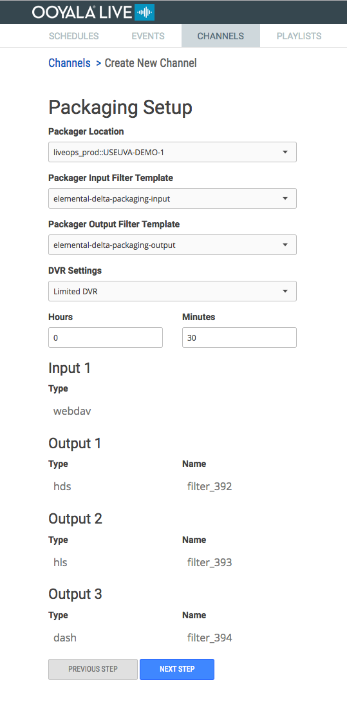

Make packaging choices for a new channel, or view and update packaging choices for an existing channel.
Packaging Setup Workflow
Packaging Setup
| General Setup Page | Considerations |
|---|---|
|

|
|